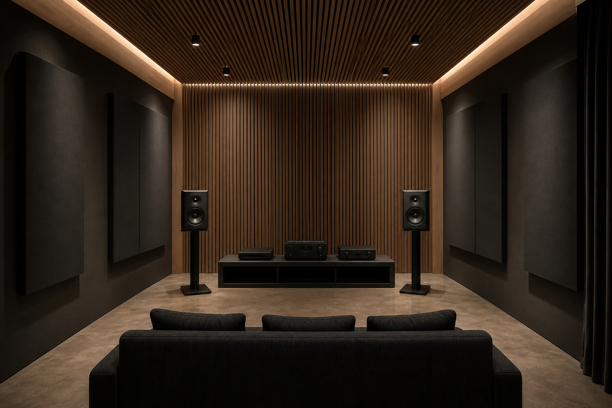

Technical advice from people who know studios and listening rooms.
A3 Nearfield Monitor
Nearfield precision. Midfield authority.
Arrange a demonstration →Download datasheet
Controlled directivity
A coaxial mid/high assembly preserves image stability while the dedicated low-frequency system supplies headroom without turning the monitor into a room problem.
20 Hz100 Hz1 kHz10 kHz20 kHz
Reference voicing
Designed for accuracy, not flattery. Decisions made here should translate beyond this room, this programme and this playback level.
Our engineering approach →Engineering
A three-way active monitor for commercial rooms, scoring stages and post-production suites.
- Serviceable construction and documented calibration
- Stable performance at real working levels
- Local, privacy-respecting configuration
- Long-life parts and factory recertification

Technical specifications
Download full specifications- Frequency response
- 34 Hz–24 kHz ±1.2 dB
- Peak SPL
- 123 dB pair
- Amplification
- 900 W Class D, tri-amplified
- Inputs
- Analogue XLR + AES3 + network
- LF driver
- 8.5 in carbon-paper composite
- MF/HF
- 4 in / 1 in coaxial
- Dimensions
- 520 × 300 × 390 mm
- Weight
- 24.6 kg
In the room
Albury systems are designed to integrate, not dominate. Placement, level alignment and the room remain part of the product.
Setup and room guidance →
Support & service
Five-year cover on parts and labour for registered systems.
On-site and factory measurement with retained records.
Genuine parts and long-life service commitments.